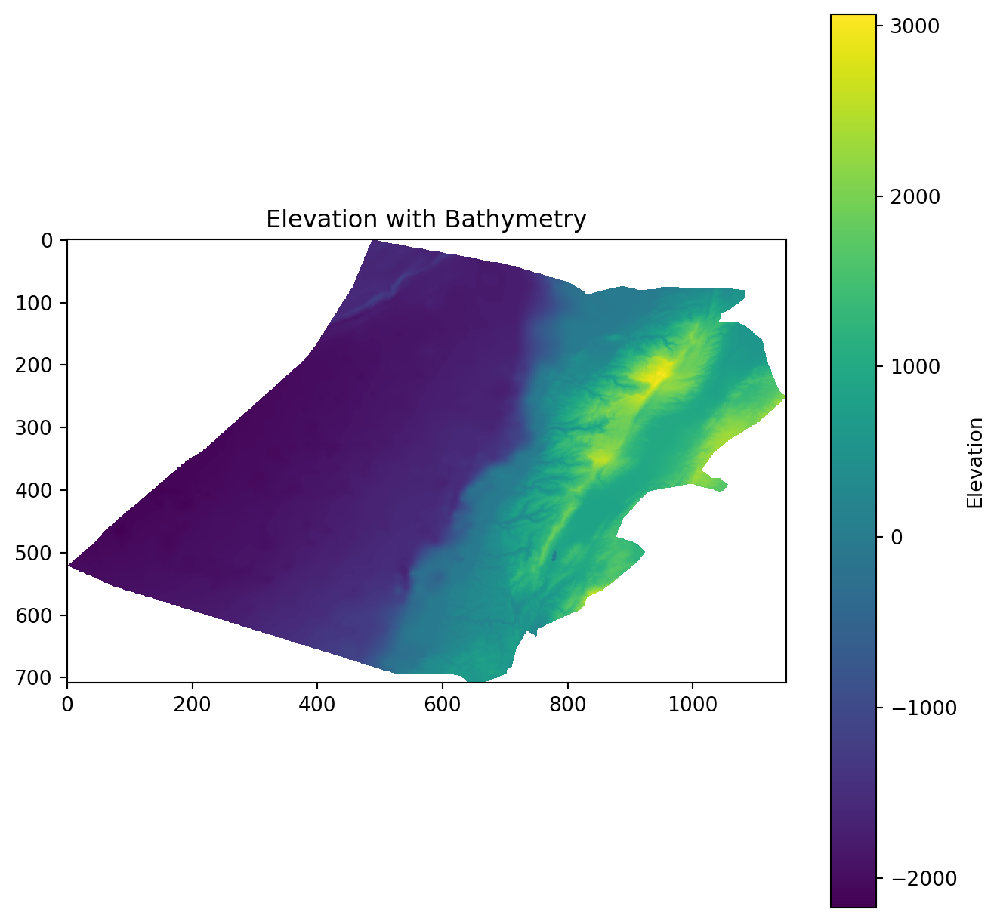
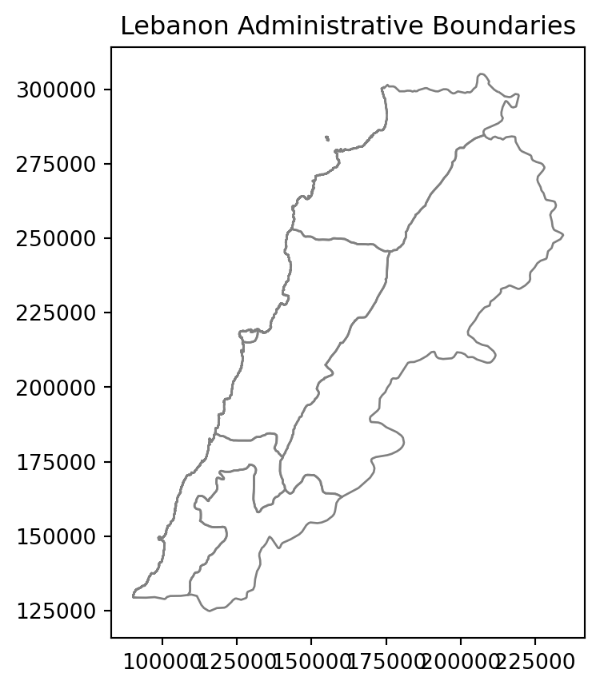
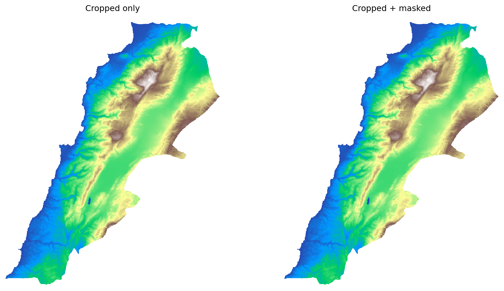
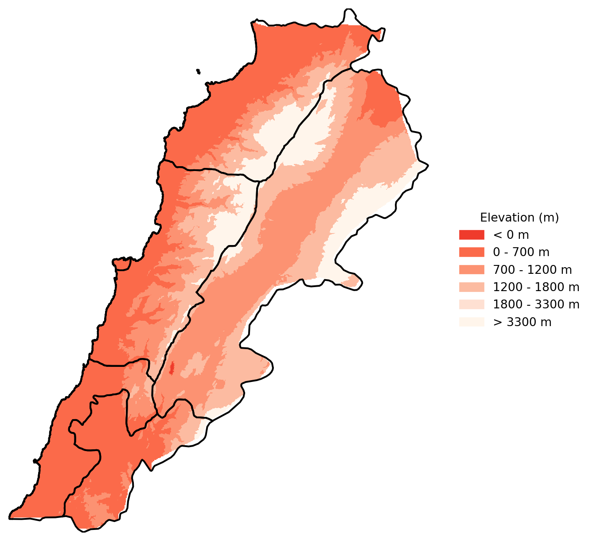
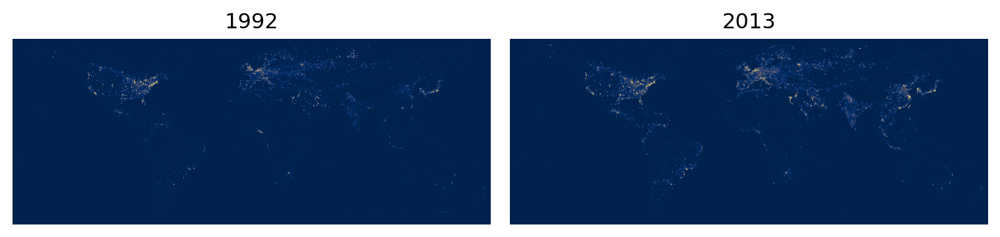
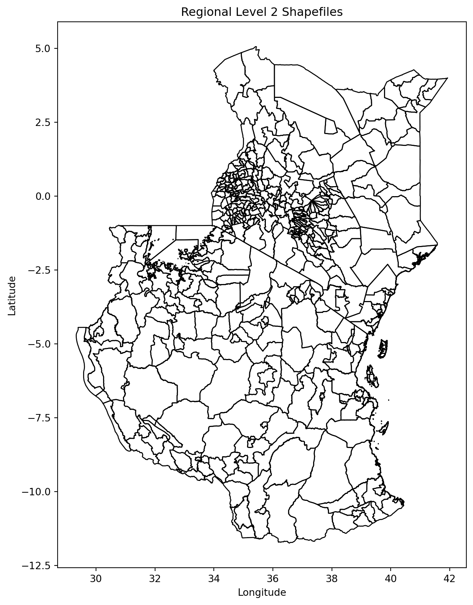
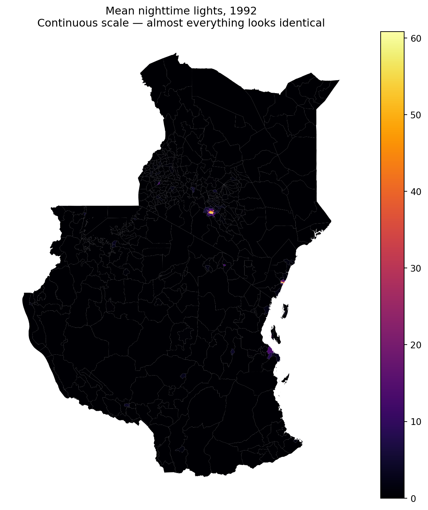
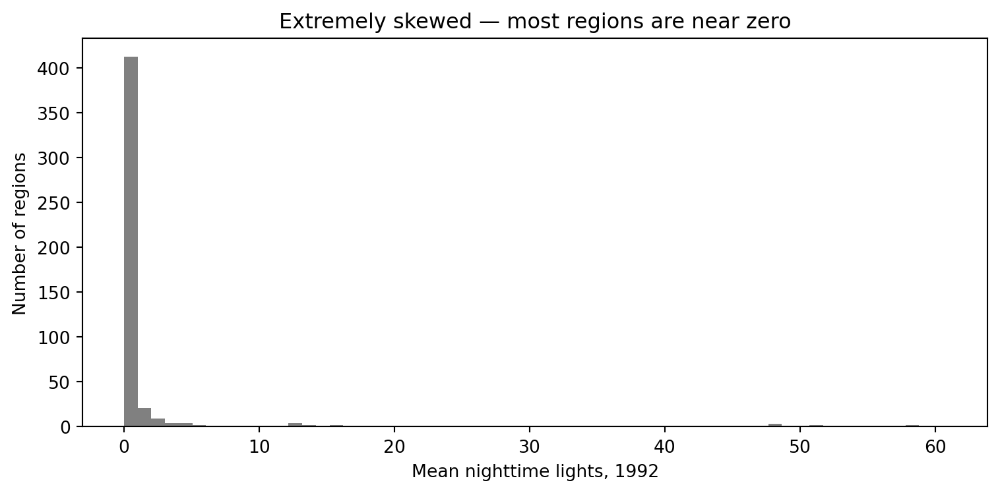
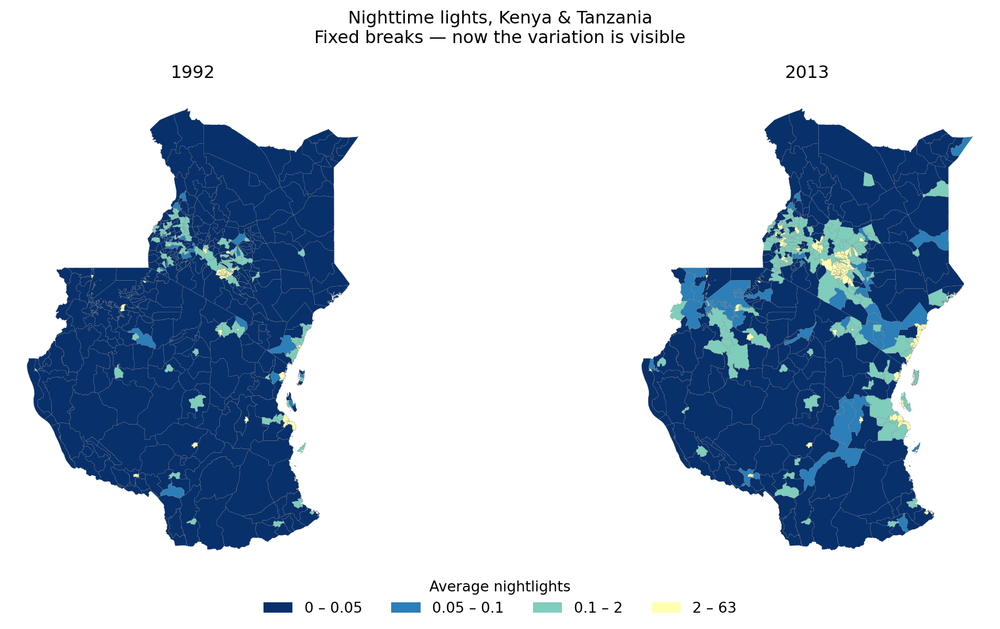
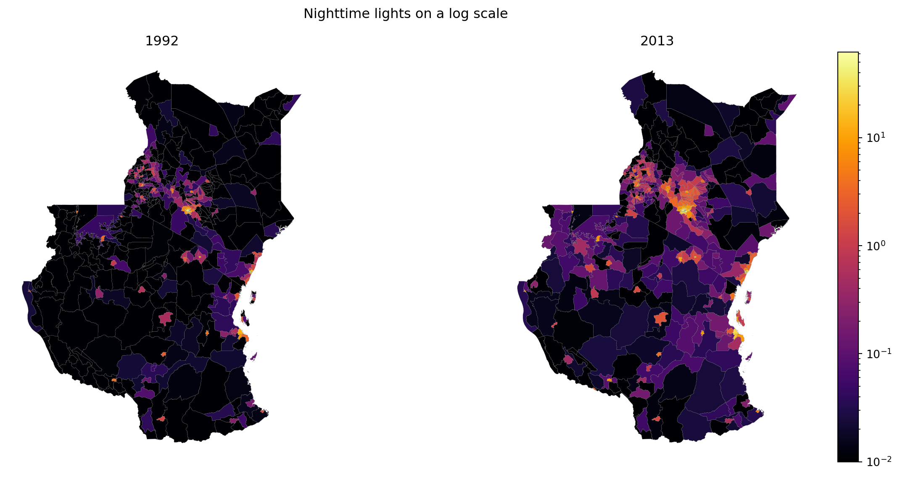

# Importing rasterio for handling raster data
import rasterio
from rasterio.warp import reproject, Resampling, calculate_default_transform
from rasterio.mask import mask
from rasterio.plot import show
# For converting Shapely geometries to GeoJSON format
from shapely.geometry import mapping
# For combining many geometries into one (version-agnostic across geopandas releases)
from shapely.ops import unary_union
# For plotting and visualizing data using Matplotlib
import matplotlib.pyplot as plt
from matplotlib.patches import Patch
import matplotlib.colors as mcolors
from matplotlib.colors import ListedColormap, BoundaryNorm
# For working with geospatial data
import geopandas as gpd
# For numerical operations and handling arrays
import numpy as np
import pandas as pd
# These imports are for file and directory operations
import os
import zipfile
import tarfile
import gzip
import shutil
# For zonal statistics
from rasterstats import zonal_statsLab in Python
Everything we have mapped so far has been vector data — points, lines and polygons, each with a geometry and a row in a table. Raster data works differently: a regular grid of cells, each holding a single value, with no table of attributes at all.
That difference matters more than it sounds. A raster doesn’t know about “neighbourhoods” or “households” — it just knows that cell (1450, 2013) has the value 847. Much of working with raster data is about bridging that gap: getting from a grid of numbers to something you can join to the social and administrative data you actually care about.
TipWhat you’ll be able to do by the end
- Load a raster, check its CRS, and reproject it
- Crop and mask it down to an area of interest
- Style it so it actually communicates something
- Extract raster values at point locations — the raster → vector bridge
- Compute zonal statistics — one value per administrative area, ready to join and map as a choropleth
Importing Modules
Terrain data
Import raster data
Raster terrain data consists of gridded elevation values that represent the topography of a geographic area. You can download this from the relevant github folder. A good place to download elevation data is Earth Explorer. This video takes you through the download process if you want to try this out yourself.
We first import a raster file for elevation.
# Load the raster data
elevation = rasterio.open("data/Lebanon/LBN_elevation_w_bathymetry.tif")Plot it.
plt.figure(figsize=(8, 8))
plt.imshow(elevation.read(1), cmap='viridis')
plt.colorbar(label='Elevation')
plt.title('Elevation with Bathymetry')
plt.show()
This information is typically accessed and updated via the .profile.
print(elevation.profile){'driver': 'GTiff', 'dtype': 'float64', 'nodata': nan, 'width': 1150, 'height': 708, 'count': 1, 'crs': CRS.from_epsg(4326), 'transform': Affine(0.002500000000000124, 0.0, 33.74907268219525,
0.0, -0.002500000000000124, 34.833268747734884), 'blockxsize': 256, 'blockysize': 256, 'tiled': True, 'compress': 'deflate', 'interleave': 'band'}Have a look at the CRS.
# Check the CRS of the raster
crs = elevation.crs
print(crs)EPSG:4326Import the Lebanon shapefile
Import the Lebanon shapefile, plot it, and verify its Coordinate Reference System (CRS). Is it the same as the raster’s CRS?
# Load the shapefile data
Lebanon_adm1 = gpd.read_file("data/Lebanon/LBN_adm1.shp")
# Plot the geometry
Lebanon_adm1.plot(edgecolor='grey', facecolor='none')
plt.title('Lebanon Administrative Boundaries')
plt.show()
# Check the CRS of the shapefile
crs = Lebanon_adm1.crs
print(crs)EPSG:22770Reproject the Raster
We reproject the raster to match the CRS of the Lebanon shapefile — the same thing the R lab does. Reprojecting a raster in rasterio takes a few more steps than in R: we have to calculate the new transform and grid dimensions ourselves, then write the result out.
Important
Reprojecting a raster is not the same as reprojecting a vector. Vector reprojection just moves coordinates. Raster reprojection has to build a whole new grid and estimate values for the new cells — so it necessarily changes your data slightly. Reproject once, as early as possible, and avoid doing it repeatedly.
# Match the CRS of the Lebanon shapefile (rather than hardcoding a code)
dst_crs = Lebanon_adm1.crs
# Calculate the transform matrix, width, and height for the output raster
dst_transform, width, height = calculate_default_transform(
elevation.crs, # source CRS from the raster
dst_crs, # destination CRS
elevation.width, # column count
elevation.height, # row count
*elevation.bounds # outer boundaries (left, bottom, right, top)
)
# Print the source and destination transforms
print("Source Transform:\n", elevation.transform, '\n')
print("Destination Transform:\n", dst_transform)
# Define the metadata for the output raster
dst_meta = elevation.meta.copy()
dst_meta.update({
'crs': dst_crs,
'transform': dst_transform,
'width': width,
'height': height
})
# Reproject and write the output raster
with rasterio.open("data/Lebanon/reprojected_elevation.tif", "w", **dst_meta) as dst:
for i in range(1, elevation.count + 1):
reproject(
source=rasterio.band(elevation, i),
destination=rasterio.band(dst, i),
src_transform=elevation.transform,
src_crs=elevation.crs,
dst_transform=dst_transform,
dst_crs=dst_crs,
resampling=Resampling.nearest
)Source Transform:
| 0.00, 0.00, 33.75|
| 0.00,-0.00, 34.83|
| 0.00, 0.00, 1.00|
Destination Transform:
| 244.50, 0.00,-36219.30|
| 0.00,-244.50, 326205.11|
| 0.00, 0.00, 1.00|Cropping and Masking
Cropping and masking are both spatial operations used to narrow a raster down to an area of interest — but they do different things:
Cropping
Purpose: changes the extent of the raster by cutting it down to a new bounding box. The result is a smaller, rectangular raster.
Typical Use: reducing the size of a raster to focus on a smaller geographic area while retaining all the original values within that area.
Masking
Purpose: sets cells outside a given shape to
nodata, keeping the extent the same. The result is the same size, but with everything outside your polygon blanked out.Typical Use: isolating specific areas or features — for example extracting land cover within the boundaries of a protected national park.
TipWhy do both, and in this order?
Cropping is a cheap rectangular operation; masking has to test every cell against a polygon boundary. Crop first, then mask — you shrink the problem before doing the expensive part. On a large raster this can be the difference between seconds and minutes.
In rasterio, mask() does both jobs depending on its arguments — crop=True trims the extent, and filled=True blanks out cells beyond the polygon. Let’s do them separately so you can see the difference:
elevation_22770 = rasterio.open("data/Lebanon/reprojected_elevation.tif")
# Combine the geometries into a single shape.
# We use shapely's unary_union() rather than the GeoSeries method, because
# that method was renamed in geopandas 1.0 (.unary_union -> .union_all()),
# so calling it directly breaks on one version or the other.
lebanon_union = unary_union(Lebanon_adm1.geometry.values)
# 1. CROP only -- trim to the bounding box, keep every value inside it
elevation_cropped, cropped_transform = mask(
elevation_22770, [mapping(lebanon_union)], crop=True, filled=False
)
# 2. CROP + MASK -- also blank out anything outside the country outline
elevation_lebanon, elevation_lebanon_transform = mask(
elevation_22770, [mapping(lebanon_union)], crop=True
)
Note
Compare the two results to see the difference for yourself:
fig, (ax1, ax2) = plt.subplots(1, 2, figsize=(12, 6))
show(elevation_cropped, transform=cropped_transform, ax=ax1, cmap='terrain')
ax1.set_title("Cropped only")
ax1.axis('off')
show(elevation_lebanon, transform=elevation_lebanon_transform, ax=ax2, cmap='terrain')
ax2.set_title("Cropped + masked")
ax2.axis('off')
plt.tight_layout()
plt.show()
Plot elevation
# Assuming elevation_lebanon contains the cropped elevation data and Lebanon_adm1 is the GeoDataFrame
fig, ax = plt.subplots(figsize=(8, 8))
# Plot the elevation data
show(elevation_lebanon, transform=elevation_lebanon_transform, ax=ax, cmap='terrain')
# Plot the Lebanon boundaries on top, with no fill color
Lebanon_adm1.boundary.plot(ax=ax, edgecolor='black')
plt.show()Let’s improve this a bit. Remember that there is a lot we can do with Cmap.
# Define the reversed 6 shades of orange
orange_shades_reversed = ['#ef3b2c', '#fb6a4a', '#fc9272', '#fcbba1', '#fee0d2', '#fff5eb']
# Define the breaks
boundaries = [-100, 0, 700, 1200, 1800, 3300]
# Define the color map and normalization
cmap = ListedColormap(orange_shades_reversed)
norm = BoundaryNorm(boundaries=boundaries, ncolors=len(orange_shades_reversed))
fig, ax = plt.subplots(figsize=(8, 8))
# Plot the elevation data with the custom color map
im = show(elevation_lebanon, transform=elevation_lebanon_transform, ax=ax, cmap=cmap, norm=norm)
# Plot the Lebanon boundaries on top, with no fill color
Lebanon_adm1.boundary.plot(ax=ax, edgecolor='black')
# Remove the axes
ax.axis('off')
# Manually create a legend
legend_labels = ['< 0 m', '0 - 700 m', '700 - 1200 m', '1200 - 1800 m', '1800 - 3300 m', '> 3300 m']
legend_patches = [Patch(color=orange_shades_reversed[i], label=legend_labels[i]) for i in range(len(orange_shades_reversed))]
# Add the legend to the right of the plot
ax.legend(handles=legend_patches, loc='center left', bbox_to_anchor=(1, 0.5), title='Elevation (m)', frameon=False)
plt.show()
Questions to ask yourself about how you can improve these maps, going back to geo-visualisation and choropleths.
What are the logical breaks for elevation data?
Should the colours be changed to standard elevation pallettes?
Spatial join with vector data
You might want to extract values from a raster data set, and then map them within a vector framework or extract them to analyse them statistically. If it therefore very useful to know how to extract:
# Load some geo-localized survey data
households = gpd.read_file("data/Lebanon/random_survey_LBN.shp")
# Open the elevation raster file
with rasterio.open("data/Lebanon/LBN_elevation_w_bathymetry.tif") as src:
# Reproject households coordinates to the CRS of the raster
households = households.to_crs(src.crs)
# Extract elevation values at the coordinates of the points
housesales_elevation = [
val[0] if val is not None else None
for val in src.sample([(geom.x, geom.y) for geom in households.geometry])
]
# Attach elevation at each point to the original households GeoDataFrame
households['elevation'] = housesales_elevation
# Check out the data
print(households.head()) id geometry elevation
0 0 POINT (35.90386 33.72841) 876.0
1 1 POINT (36.17128 34.20268) 1546.0
2 2 POINT (35.81425 34.19914) 1108.0
3 3 POINT (36.03916 34.06442) 1234.0
4 4 POINT (35.69817 34.04050) 999.0- Handling CRS (Coordinate Reference System): The household data CRS is transformed to match the raster’s CRS before extracting elevation values.
- Extracting Elevation: Elevation values are extracted at each household location using rasterio’s sample method.
- Attaching Elevation Data: The elevation data is added as a new column to the households
GeoDataFrame.
Important
Make sure all your data is in the same CRS, otherwise the rasterio’s sample will not work properly.
Night Lights
This section is a bit more advanced, there are hints along the way to make it simpler.
Download data
NoteDownload the Data
We need to download some raster data. NOAA has made nighttime lights data available for 1992 to 2013. It is called the Version 4 DMSP-OLS Nighttime Lights Time Series. The files are cloud-free composites made using all the available archived DMSP-OLS smooth resolution data for calendar years. In cases where two satellites were collecting data - two composites were produced. The products are 30 arc-second grids, spanning -180 to 180 degrees longitude and -65 to 75 degrees latitude. We can download the Average, Visible, Stable Lights, & Cloud Free Coverages for 1992 and 2013 and put them in the data/Kenya_Tanzania folder.
Important
If you have trouble downloading from NOAA, a copy of the two years we need is available from here — you need to be logged into your UoL account. Available both as the original tar archives and as ready-to-use TIFs if you’d rather skip the decompression step.
A TAR file is an archive created by tar, a Unix-based utility used to package files together for backup or distribution purposes. It contains multiple files stored in an uncompressed format along with metadata about the archive. TAR archives compressed with GNU Zip compression may become GZ, .TAR.GZ, or .TGZ files. We need to decompress them before using them.
It is also good practice to create a scratch folder where you do all your unzipping.
# Load the raster files
raster1_path = 'data/Kenya_Tanzania/F101992.v4b_web.stable_lights.avg_vis.tif'
raster2_path = 'data/Kenya_Tanzania/F182013.v4c_web.stable_lights.avg_vis.tif'
# Open the raster files
with rasterio.open(raster1_path) as src1:
raster1 = src1.read(1) # Read the first (and only) band
with rasterio.open(raster2_path) as src2:
raster2 = src2.read(1) # Read the first (and only) band
# Stack the rasters along a new axis (depth axis)
stacked_rasters = np.stack([raster1, raster2], axis=0)# Create a plot
fig, (ax1, ax2) = plt.subplots(1, 2, figsize=(8, 8))
# Plot the first raster
ax1.imshow(stacked_rasters[0], cmap='cividis')
ax1.set_title('1992')
ax1.axis('off')
# Plot the second raster
ax2.imshow(stacked_rasters[1], cmap='cividis')
ax2.set_title('2013')
ax2.axis('off')
# Show the plot
plt.tight_layout()
plt.show()
Why can’t you see much? Discuss with the person next to you.
TipStuck?
These are global rasters, and you’re looking at the whole planet. Nearly all of it is dark, and the few bright pixels are tiny at this scale. Two things are going on: the extent is far larger than our area of interest, and the value distribution is extremely skewed — a handful of very bright cells compress everything else into the bottom of the colour ramp. We’ll fix the first with zonal statistics, and the second with fixed breaks when we map.
Country shapefiles
The second step is to download the shapefiles for Kenya and Tanzania. GADM has made available national and subnational shapefiles for the world. The zips you download, such as gadm36_KEN_shp.zip from GADM should be placed in the Kenya_Tanzania folder. This is the link gadm.
# Set the data folder path
datafolder = 'data'
# List the country shapefiles downloaded from the GADM website
files = [os.path.join(root, file)
for root, dirs, files in os.walk(os.path.join(datafolder, "Kenya_Tanzania"))
for file in files if file.endswith("_shp.zip")]
print(files)
# Create a scratch folder
scratch_folder = os.path.join(datafolder, "Kenya_Tanzania", "scratch")
os.makedirs(scratch_folder, exist_ok=True)
# Unzip the files
for file in files:
with zipfile.ZipFile(file, 'r') as zip_ref:
zip_ref.extractall(scratch_folder)
# List GADM shapefiles
gadm_files = [os.path.join(root, file)
for root, dirs, files in os.walk(os.path.join(datafolder, "Kenya_Tanzania"))
for file in files if file.startswith("gadm")]
print(gadm_files)
# Select regional level 2 files
gadm_files_level2 = [file for file in gadm_files if "2.shp" in file]
print(gadm_files_level2)
# Load the shapefiles
shps = [gpd.read_file(shp) for shp in gadm_files_level2]
print(shps)
# Delete the scratch folder with the data we don't need
#shutil.rmtree(scratch_folder)['data/Kenya_Tanzania/gadm36_TZA_shp.zip', 'data/Kenya_Tanzania/gadm36_KEN_shp.zip']
['data/Kenya_Tanzania/gadm36_TZA_shp.zip', 'data/Kenya_Tanzania/gadm36_KEN_shp.zip', 'data/Kenya_Tanzania/scratch/gadm36_KEN_2.dbf', 'data/Kenya_Tanzania/scratch/gadm36_KEN_3.dbf', 'data/Kenya_Tanzania/scratch/gadm36_KEN_1.dbf', 'data/Kenya_Tanzania/scratch/gadm36_KEN_0.dbf', 'data/Kenya_Tanzania/scratch/gadm36_TZA_0.dbf', 'data/Kenya_Tanzania/scratch/gadm36_TZA_1.dbf', 'data/Kenya_Tanzania/scratch/gadm36_TZA_3.dbf', 'data/Kenya_Tanzania/scratch/gadm36_TZA_2.dbf', 'data/Kenya_Tanzania/scratch/gadm36_TZA_2.shp', 'data/Kenya_Tanzania/scratch/gadm36_TZA_1.shx', 'data/Kenya_Tanzania/scratch/gadm36_TZA_2.cpg', 'data/Kenya_Tanzania/scratch/gadm36_TZA_3.cpg', 'data/Kenya_Tanzania/scratch/gadm36_TZA_0.shx', 'data/Kenya_Tanzania/scratch/gadm36_TZA_3.shp', 'data/Kenya_Tanzania/scratch/gadm36_TZA_1.shp', 'data/Kenya_Tanzania/scratch/gadm36_TZA_2.shx', 'data/Kenya_Tanzania/scratch/gadm36_TZA_1.cpg', 'data/Kenya_Tanzania/scratch/gadm36_TZA_0.cpg', 'data/Kenya_Tanzania/scratch/gadm36_TZA_3.shx', 'data/Kenya_Tanzania/scratch/gadm36_TZA_0.shp', 'data/Kenya_Tanzania/scratch/gadm36_KEN_0.cpg', 'data/Kenya_Tanzania/scratch/gadm36_KEN_3.shx', 'data/Kenya_Tanzania/scratch/gadm36_KEN_0.shp', 'data/Kenya_Tanzania/scratch/gadm36_KEN_1.shp', 'data/Kenya_Tanzania/scratch/gadm36_KEN_2.shx', 'data/Kenya_Tanzania/scratch/gadm36_KEN_1.cpg', 'data/Kenya_Tanzania/scratch/gadm36_KEN_3.cpg', 'data/Kenya_Tanzania/scratch/gadm36_KEN_0.shx', 'data/Kenya_Tanzania/scratch/gadm36_KEN_3.shp', 'data/Kenya_Tanzania/scratch/gadm36_KEN_2.shp', 'data/Kenya_Tanzania/scratch/gadm36_KEN_1.shx', 'data/Kenya_Tanzania/scratch/gadm36_KEN_2.cpg', 'data/Kenya_Tanzania/scratch/gadm36_TZA_2.prj', 'data/Kenya_Tanzania/scratch/gadm36_TZA_3.prj', 'data/Kenya_Tanzania/scratch/gadm36_TZA_1.prj', 'data/Kenya_Tanzania/scratch/gadm36_TZA_0.prj', 'data/Kenya_Tanzania/scratch/gadm36_KEN_0.prj', 'data/Kenya_Tanzania/scratch/gadm36_KEN_1.prj', 'data/Kenya_Tanzania/scratch/gadm36_KEN_3.prj', 'data/Kenya_Tanzania/scratch/gadm36_KEN_2.prj']
['data/Kenya_Tanzania/scratch/gadm36_TZA_2.shp', 'data/Kenya_Tanzania/scratch/gadm36_KEN_2.shp']
[ GID_0 NAME_0 GID_1 NAME_1 NL_NAME_1 \
0 TZA Tanzania TZA.1_1 Arusha None
1 TZA Tanzania TZA.1_1 Arusha None
2 TZA Tanzania TZA.1_1 Arusha None
3 TZA Tanzania TZA.1_1 Arusha None
4 TZA Tanzania TZA.1_1 Arusha None
.. ... ... ... ... ...
178 TZA Tanzania TZA.28_1 Zanzibar North None
179 TZA Tanzania TZA.29_1 Zanzibar South and Central None
180 TZA Tanzania TZA.29_1 Zanzibar South and Central None
181 TZA Tanzania TZA.30_1 Zanzibar West None
182 TZA Tanzania TZA.30_1 Zanzibar West None
GID_2 NAME_2 \
0 TZA.1.2_1 Arusha
1 TZA.1.1_1 Arusha Urban
2 TZA.1.3_1 Karatu
3 TZA.1.4_1 Lake Eyasi
4 TZA.1.5_1 Lake Manyara
.. ... ...
178 TZA.28.2_1 Kaskazini 'B'
179 TZA.29.1_1 Kati
180 TZA.29.2_1 Kusini
181 TZA.30.1_1 Magharibi
182 TZA.30.2_1 Mjini
VARNAME_2 NL_NAME_2 TYPE_2 \
0 None None Wilaya
1 None None Wilaya
2 None None Wilaya
3 None None Water body
4 None None Water body
.. ... ... ...
178 Kaskazini B|North B|Zansibar North|Zanzibar No... None Wilaya
179 Zanzibar Central None Wilaya
180 Zanzibar South None Wilaya
181 Zanzibar West None Wilaya
182 Zanzibar Town None Wilaya
ENGTYPE_2 CC_2 HASC_2 \
0 District 06 TZ.AS.AS
1 District 03 None
2 District 04 TZ.AS.KA
3 Water body None None
4 Water body None None
.. ... ... ...
178 District 02 TZ.ZN.NB
179 District 01 TZ.ZS.CE
180 District 02 TZ.ZS.SO
181 District 01 TZ.ZW.WE
182 District 02 TZ.ZW.TO
geometry
0 MULTIPOLYGON (((36.86976 -3.52607, 36.86972 -3...
1 POLYGON ((36.75153 -3.37381, 36.75180 -3.37386...
2 POLYGON ((34.79647 -3.79258, 34.79669 -3.79408...
3 POLYGON ((34.89178 -3.62421, 34.89257 -3.62398...
4 POLYGON ((35.77901 -3.56244, 35.77862 -3.56134...
.. ...
178 MULTIPOLYGON (((39.20542 -5.91153, 39.20542 -5...
179 MULTIPOLYGON (((39.50847 -6.17962, 39.50847 -6...
180 POLYGON ((39.57180 -6.41676, 39.57180 -6.41680...
181 MULTIPOLYGON (((39.33430 -6.41708, 39.33430 -6...
182 POLYGON ((39.22165 -6.18391, 39.22163 -6.18395...
[183 rows x 14 columns], GID_0 NAME_0 GID_1 NAME_1 NL_NAME_1 GID_2 NAME_2 \
0 KEN Kenya KEN.1_1 Baringo None KEN.1.1_1 805
1 KEN Kenya KEN.1_1 Baringo None KEN.1.2_1 Baringo Central
2 KEN Kenya KEN.1_1 Baringo None KEN.1.3_1 Baringo North
3 KEN Kenya KEN.1_1 Baringo None KEN.1.4_1 Baringo South
4 KEN Kenya KEN.1_1 Baringo None KEN.1.5_1 Eldama Ravine
.. ... ... ... ... ... ... ...
296 KEN Kenya KEN.47_1 West Pokot None KEN.47.2_1 Kapenguria
297 KEN Kenya KEN.47_1 West Pokot None KEN.47.3_1 Pokot South
298 KEN Kenya KEN.47_1 West Pokot None KEN.47.4_1 Sigor
299 KEN Kenya KEN.47_1 West Pokot None KEN.47.5_1 unknown 3
300 KEN Kenya KEN.47_1 West Pokot None KEN.47.6_1 unknown 8
VARNAME_2 NL_NAME_2 TYPE_2 ENGTYPE_2 CC_2 HASC_2 \
0 None None Constituency Constituency 162 None
1 None None Constituency Constituency 159 None
2 None None Constituency Constituency 158 None
3 None None Constituency Constituency 160 None
4 None None Constituency Constituency 162 None
.. ... ... ... ... ... ...
296 None None Constituency Constituency 129 None
297 None None Constituency Constituency 132 None
298 None None Constituency Constituency 130 None
299 None None Constituency Constituency 0 None
300 None None Constituency Constituency 0 None
geometry
0 POLYGON ((35.87727 -0.02973, 35.87699 -0.02947...
1 POLYGON ((35.80651 0.31642, 35.80780 0.31627, ...
2 POLYGON ((35.81394 0.60442, 35.81377 0.60363, ...
3 POLYGON ((36.25757 0.38328, 36.25766 0.38242, ...
4 POLYGON ((35.84734 -0.07654, 35.84637 -0.07804...
.. ...
296 MULTIPOLYGON (((35.35352 1.65473, 35.35364 1.6...
297 POLYGON ((35.47385 1.00621, 35.47345 1.00622, ...
298 POLYGON ((35.59382 1.28579, 35.59303 1.28596, ...
299 POLYGON ((35.15631 1.49415, 35.15616 1.49424, ...
300 POLYGON ((35.06057 1.50514, 35.06191 1.50485, ...
[301 rows x 14 columns]]Merge shapefiles
Even though it is not necessary here, we can merge the shapefile to visualize all the regions at once.
When doing zonal statistics, it is faster and easier to process one country at a time and then combine the resulting tables. If you have access to a computer with multiple cores, it is also possible to do “parallel processing” to process each chunk at the same time in parallel.
# Merge all shapefiles into one GeoDataFrame
merged_countries = gpd.GeoDataFrame(pd.concat(shps, ignore_index=True))
# Optionally, reset index if needed
merged_countries = merged_countries.reset_index(drop=True)We can then plot Kenya and Tanzania at Regional Level 2:
# Plot all shapefiles
fig, ax = plt.subplots(figsize=(10, 10))
merged_countries.plot(ax=ax, edgecolor='k', facecolor='none', linewidth=1) # No fill color
#for gdf in shps:
# gdf.plot(ax=ax, edgecolor='k', facecolor='none', alpha=0.5) # Adjust alpha and edgecolor as needed
# Set plot title and labels
ax.set_title('Regional Level 2 Shapefiles')
ax.set_xlabel('Longitude')
ax.set_ylabel('Latitude')
# Show plot
plt.show()
Zonal statistics
This is the step that turns a raster into something you can treat like any other table. Zonal statistics summarise raster cells within each polygon — giving you one number per administrative region.
We use the module rasterstats to calculate the sum and average nighttime lights for each region. The nighttime lights rasters are quite large, but as we do not need to do any operations on them (e.g. cropping or masking to the shapefiles extent), the process should be relatively fast.
# Calculate zonal statistics for the first raster (1992)
stats_1992 = zonal_stats(merged_countries, raster1_path, stats=['sum', 'mean'], nodata=-9999, geojson_out=True)
# Calculate zonal statistics for the second raster (2013)
stats_2013 = zonal_stats(merged_countries, raster2_path, stats=['sum', 'mean'], nodata=-9999, geojson_out=True)
# Convert the zonal stats results to GeoDataFrames, retaining geometry and attributes
stats_1992_gdf = gpd.GeoDataFrame.from_features(stats_1992)
stats_2013_gdf = gpd.GeoDataFrame.from_features(stats_2013)
# Add a year column to distinguish between them
stats_1992_gdf['year'] = 1992
stats_2013_gdf['year'] = 2013
# Combine the results into a single GeoDataFrame -- we use this for the faceted map below
combined_stats_gdf = pd.concat([stats_1992_gdf, stats_2013_gdf], ignore_index=True)
# Display the results
combined_stats_gdf.head()| geometry | GID_0 | NAME_0 | GID_1 | NAME_1 | NL_NAME_1 | GID_2 | NAME_2 | VARNAME_2 | NL_NAME_2 | TYPE_2 | ENGTYPE_2 | CC_2 | HASC_2 | mean | sum | year | |
|---|---|---|---|---|---|---|---|---|---|---|---|---|---|---|---|---|---|
| 0 | MULTIPOLYGON (((36.86976 -3.52607, 36.86972 -3... | TZA | Tanzania | TZA.1_1 | Arusha | None | TZA.1.2_1 | Arusha | None | None | Wilaya | District | 06 | TZ.AS.AS | 0.616771 | 890.0 | 1992 |
| 1 | POLYGON ((36.75153 -3.37381, 36.75180 -3.37386... | TZA | Tanzania | TZA.1_1 | Arusha | None | TZA.1.1_1 | Arusha Urban | None | None | Wilaya | District | 03 | None | 2.260450 | 703.0 | 1992 |
| 2 | POLYGON ((34.79647 -3.79258, 34.79669 -3.79408... | TZA | Tanzania | TZA.1_1 | Arusha | None | TZA.1.3_1 | Karatu | None | None | Wilaya | District | 04 | TZ.AS.KA | 0.000000 | 0.0 | 1992 |
| 3 | POLYGON ((34.89178 -3.62421, 34.89257 -3.62398... | TZA | Tanzania | TZA.1_1 | Arusha | None | TZA.1.4_1 | Lake Eyasi | None | None | Water body | Water body | None | None | 0.000000 | 0.0 | 1992 |
| 4 | POLYGON ((35.77901 -3.56244, 35.77862 -3.56134... | TZA | Tanzania | TZA.1_1 | Arusha | None | TZA.1.5_1 | Lake Manyara | None | None | Water body | Water body | None | None | 0.000000 | 0.0 | 1992 |
Tip
Note we asked for two statistics — sum and mean. Which one you want depends on the question. Sum of light is closer to total economic activity; mean controls for the fact that regions differ enormously in size (the same MAUP issue you met with choropleths). We map the mean below — try the sum and see how differently the map reads.
More on zonal stats in python here.
Visualize
Let’s have a first look at our result. Note that from here on, this is just a choropleth — exactly what you built in the vector labs. The raster work is done; the output is an ordinary GeoDataFrame with numeric columns.
fig, ax = plt.subplots(figsize=(8, 8))
stats_1992_gdf.plot(column='mean', cmap='inferno', legend=True, ax=ax)
ax.set_title("Mean nighttime lights, 1992\nContinuous scale — almost everything looks identical")
ax.axis('off')
plt.tight_layout()
plt.show()
That map is nearly useless, and deliberately so. A handful of very bright regions (Nairobi, Dar es Salaam) stretch the colour scale so far that all the actual variation across the rest of the two countries is squashed into the bottom of the ramp.
The distribution shows why:
fig, ax = plt.subplots(figsize=(8, 4))
ax.hist(stats_1992_gdf['mean'].dropna(), bins=60, color='grey')
ax.set_xlabel("Mean nighttime lights, 1992")
ax.set_ylabel("Number of regions")
ax.set_title("Extremely skewed — most regions are near zero")
plt.tight_layout()
plt.show()
To make the maps tell a story, we need fixed breaks placed where the variation actually is — bunched up near zero, rather than spread evenly from 0 to 63.
# 5 break points give 4 bins, so we need exactly 4 labels and 4 colours
breaks = [0, 0.05, 0.1, 2, 63]
labels = ['0 – 0.05', '0.05 – 0.1', '0.1 – 2', '2 – 63']
colours = ['#08306B', '#2C7FB8', '#7FCDBB', '#FFFFB2']
# pd.cut() assigns each region to a class explicitly
combined_stats_gdf['nl_class'] = pd.cut(
combined_stats_gdf['mean'],
bins=breaks,
labels=labels,
include_lowest=True
)
fig, axes = plt.subplots(1, 2, figsize=(13, 6))
for ax, yr in zip(axes, [1992, 2013]):
subset = combined_stats_gdf[combined_stats_gdf['year'] == yr]
subset.plot(
column='nl_class', ax=ax,
cmap=ListedColormap(colours),
edgecolor='grey', linewidth=0.1,
legend=False, missing_kwds={'color': 'lightgrey'}
)
ax.set_title(str(yr))
ax.axis('off')
# One shared legend, built manually so the labels match the bins exactly
handles = [Patch(facecolor=c, label=l) for c, l in zip(colours, labels)]
fig.legend(handles=handles, loc='lower center', ncol=4,
frameon=False, title='Average nightlights')
fig.suptitle("Nighttime lights, Kenya & Tanzania\nFixed breaks — now the variation is visible")
plt.tight_layout(rect=[0, 0.06, 1, 1])
plt.show()
ImportantWhy
pd.cut() rather than a continuous colormap with breaks
Binning explicitly with pd.cut() and mapping with a ListedColormap gives you a discrete variable, so you control exactly how many classes there are and which colour each one gets. Getting this wrong is a classic trap: n break points define n − 1 bins, so a mismatch between the number of breaks and the number of colours silently produces a map where classes blur together — exactly the flat map we were trying to escape.
BoundaryNorm can do the same job on a continuous colormap, but you have to be careful to pass it the right number of colours; the explicit route above is harder to get wrong.
TipAlternative: a log scale
Fixed breaks are one answer to a skewed variable. Another is to transform the scale itself, which avoids having to pick break points by hand:
from matplotlib.colors import LogNorm
fig, axes = plt.subplots(1, 2, figsize=(13, 6))
for ax, yr in zip(axes, [1992, 2013]):
subset = combined_stats_gdf[combined_stats_gdf['year'] == yr].copy()
# log(0) is undefined, so nudge zeros up slightly to keep those regions in
subset['mean_adj'] = subset['mean'].fillna(0) + 0.01
subset.plot(
column='mean_adj', ax=ax, cmap='inferno',
norm=LogNorm(vmin=0.01, vmax=subset['mean_adj'].max()),
edgecolor='grey', linewidth=0.1, legend=(ax is axes[-1])
)
ax.set_title(str(yr))
ax.axis('off')
fig.suptitle("Nighttime lights on a log scale")
plt.tight_layout()
plt.show()
Note the + 0.01: log(0) is undefined, so regions with zero light would drop out entirely. Adding a small constant keeps them in — but be honest about it, since it’s a choice that affects what the reader sees.
Tip
Have a think about what the data is telling you. What’s the story? And — carefully — what isn’t it telling you? Brighter isn’t automatically richer.
We can also make it interactive with folium and folium.plugins DualMap but this is a bit more complicated in python and will be covered in Web Mapping and Visualiation.
Where this fits: rasters in the wild
You have just done, by hand and on a small scale, roughly what a data service does at national scale and industrial volume:
- Raw imagery arrives as a noisy grid, partly obscured by cloud
- It gets cleaned — many passes combined into a composite
- A model turns spectral values into a meaningful indicator — surface temperature, vegetation, cloud probability, light
- Pixels are aggregated to administrative units, so the data can be joined to censuses, surveys and policy frameworks
Steps 1–2 we skipped (the NOAA composites arrive pre-cleaned). Step 3 was done for us. Step 4 is exactly what zonal_stats() did above.
TipWant to go further with satellite data?
This is the whole business of Imago, the imagery data service for sustainability, prosperity and wellbeing, part of Smart Data Research UK. They run that pipeline and publish the output as ready-to-use LSOA/MSOA-level statistics — no gigabyte downloads, no remote-sensing algorithms, small-area detail preserved.
From grids to areas — the full version of the four steps above, with the spectral bands / resolution / revisit-cycle background behind them. Start here.
Imago training — free, openly licensed trainings in both
RandPython, covering air temperature, precipitation and SPF. Several run directly in your browser with no installation.
Worth knowing: the SPF data you mapped in the choropleths lab was satellite-derived cloud probability that had already been through this whole pipeline. You were doing raster analysis without ever touching a raster — which is rather the point of a service like this.
Resources
rasteriodocumentation — the reference for everything in this labrasterstatsdocumentation — zonal statisticsrioxarray— a morexarray-flavoured alternative torasterio, worth knowing about for multi-band or time-series rasters